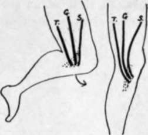

Fibula. Part 5
Description
This section is from the book "The Anatomy Of The Human Skeleton", by J. Ernest Frazer. Also available from Amazon: The anatomy of the human skeleton.
Fibula. Part 5
The deep fascia is attached to the front margin, thickening below to form the upper part of annular ligament (see later, p. 178). From this it passes outwards round the leg, covering it behind and passing to the postero-internal border. Thus the inner surface of the shaft is only covered by superficial fascia and skin, and in this the saphena vein passes upwards and backwards on the lower fourth of the bone (Fig. 134) before it comes to he on the deep fascia. It must be noticed, however, that the deep fascia is carried on to this surface by the tendons of Sartorius, etc., in the upper part : it covers these in and is blended with them. As Sartorius gives an expansion down into the deep fascia below, it is apparent that the hne of its insertion must pass backwards and downwards to reach the hne of fascial attachment on the inner border.
These tendons are inserted in the order they would take when the leg is bent (Fig. 135). They pass over the internal lateral hgament, with an intervening bursa. Their markings of insertion can usually be felt if not seen on the bone: the small extension of ossification into them to form a secondary marking may be associated with their direction, for they lie on the periosteum and practically in the plane of its surface, and thus do not tend to pull it from the bone, as would be the case if they acted at an angle.
Behind the tendons, on the inner side of the upper end of the shaft, there is to be found a weU-marked roughened area for attachment of a strong aponeurotic sheet of fibres derived from the expansion of Vastus internus. The area is shown in Fig. 134.
This set of fibres runs to the bone parallel with the front border of the internal lateral ligament, as seen in the central figure, and is directly continuous with more scattered fibres running to the bone above it, and above and in front of it : it is crossed by the three tendons, and the bursa between them and the ligament extends also on to the expansion. The marking for the ligament is behind and below that for the aponeurotic fibres : the inferior internal articular artery turns up above it.
The upper and more scattered fibres are attached to the epiphysis like the outer expansion, but as the whole internal structure is composed of expansion of the internal Vastus it must be considered as a functional capsule and such a term not applied only to the deeper fibres. The deep fascia covers it and is blended with it, so that the line of the fascia is as shown in the figure.
The interosseous border is very variable in its position in its upper part, depending on the size of the Tibialis posticus : this muscle varies in size independent of the general muscularity of the individual. The muscle arises from the back of the interosseous membrane, and is covered on its posterior surface by an aponeurosis, which is continued as a fascial covering over the upper end of the muscle to join the membrane. The covering aponeurosis is attached internally to the tibia and makes the vertical line on it. Therefore the area of origin of the muscle lies between the interosseous and vertical lines (Fig. 134) and extends up to the outer part of the oblique line. Flexor longus digitorum arises from the bone internal to the vertical line and below the oblique line, which gives origin to the tibial head of Soleus : Soleus origin extends down the inner margin also for a variable distance.
Fig. 135.-When the leg is bent, in the usual position, the Sartorius, S., from the front, the Gracilis, G., from the inner side, and the Semitendi-nosus, T., from the back of the thigh, reach the tibia in their proper order. When the leg is extended in the upright position, their insertions are brought forward, and the more posterior position becomes the iower, i.e., Semitendi-nosus is inserted below Gracilis, while Sartorius is above as well as superficial owing to its fascial expansion.
We can now analyse the oblique line and see that (Fig. 133A) its value differs in its inner and outer parts : an attempt should be made to recognise the various points on the bones. The Tibialis posticus passes obliquely across the back of the bone from its origin to the groove on the back of the malleolus, and is crossed by the Flexor longus digitorum. Therefore, on the outer side of the groove, between it and the groove for the long flexor of the great toe, the back of the lower end of the bone is in relation with the long flexor of the other toes and the posterior tibial vessels and nerve.
The deep transverse fascia of the leg separates the deep flexors and main vessels lying on them from the Soleus. It is attached to the inner margin of the bone, then between the Soleus and F. longus dig. to reach the tubercle from which its attachment passes along the fibrous arch over the main vessels to reach the head of the fibula. It is thickened below, where it is fastened to the malleolus, to form the internal annular ligament; just below the origin of Soleus it is joined at the inner margin by the deep fascia covering over that muscle, but lower down the deep fascia runs into it further from the margin as the Soleus narrows to its insertion, so that the annular ligament is really a compound of the two fasciae behind the inner ankle.
The lower epiphysis includes the fibular facet : it has nothing attached to it but ligaments.
Observe that the posterior margin of the lower articular surface comes down lower than the anterior margin, but the anterior margin is wider.
The articular surface is concave sagittally and slightly convex from side to side, corresponding with the surface of astragalus : among the ligamentous markings round its margins may be found one for the transverse posterior ligament (Fig. 136). The surface is prolonged on to the malleolus.
Continue to:
- prev: Fibula. Part 4
- Table of Contents
- next: Fibula. Part 6